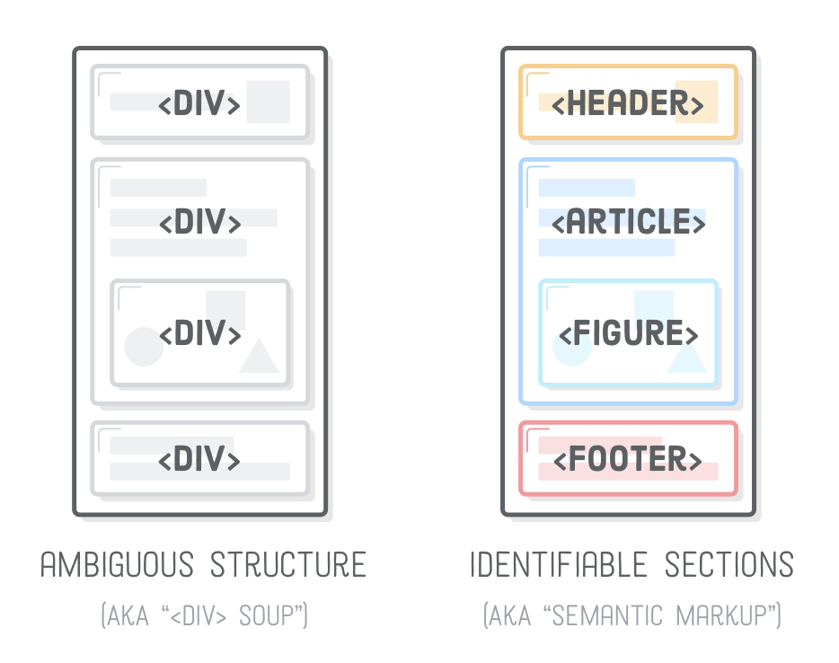
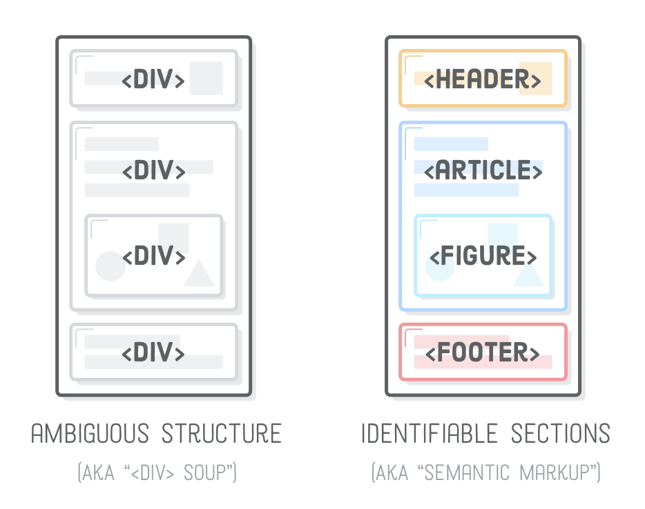

Nuotraukų ir failų kelias

Nurodant aplankalo vardą - nueinama į nurodytą aplankalą
Norint atlikti sekantį veiksmą, rašome " / "
Norint žengti žingsnį atgal iš aplankalo - reikia parašyti " .."
Puslapio strukūra
- header - puslapio viršus, kuriame nurodoma info apie puslapį / menu.
- nav - skirtas kurti puslapio menu
- section - didžiulė puslapio dalis
- div - maža puslapio dalis
- main - pagrindinė puslapio dalis
- article - main (dažniausiai) viduje esanti sekcija
- aside - šoninė (dažniausiai) puslapio sekcija
- footer - puslapio apačia, kurioje yra įvairi info ( terms and uses; privacy policy ; copyrights; links; partners...)
 

Inline, Block ir Inline-block
Inline
Inline elementai yra tokie elementai, kurie užima
tik tiek vietos ekrane, kiek jiems yra reikalinga.
Minusas tas, kad negalima keisti šių elementų dydžių.
Pliusas tas, kad jie labai lengvai įtalpinami tarp kitų
informacijos vienetų.
Tag'ų pvz: a, span, img, input, button, label, select, textarea, citie....
Block
Block elementai yra tokie elementai, kurie užima
visą leistiną plotį ir neįsileidžia kitų elementų į tą pačia
eilutę. Minusas tas, kad užima visą leistiną plotį. Pliusas
tas, kad galima keisti jų dydį.
Tag'ų pvz: h1-h6, p, div, section, main, article, nav, ol, ul, blockquote,
aside, canvas, table.....
Inline-Block
Inline-Block elementai yra tokie elementai, kurie pasisavina geriausias Blokinių ir Linijinių elementų savybes. Jie užima tik tiek vietos kiek jiems reikia, bet jų dydį vis viena galima keisti.
Model box

Margin - atstumas nuo elemento iki aplinkinių elementų rėmelio (skirtingi elementai)
Border - rėmelis, kuris yra tarp Margin ir Padding.
Padding - atstumas nuo elemento content (turinio) iki elemento rėmelio.
Content - elemento turinys. (blokinio elemento turinys užims visą leidžiamą eilutę arba nurodytą dydį).
Galime aprašyti Margin, Border ir Padding nustatymus 4 skirtingais būdais.
Vienas matmuo visom 4 kraštinėm (margin: 50px)
Rašant dvejus matmenis - pirmasis priskiriamas viršui ir apačiai,
antrasis priskiriamas šonams (margin: 20px 50px)
Rašant tris matmenis - pirmasis priskiriamas viršui, antrasis - šonams,
trečiasis - apačiai. (padding: 30px 20px 10px)
Rašant keturis matmenis - jie priskiriami eilės tvarka pagal laikrodžio
rodyklės kryptį nuo viršutinio. (border-style: solid dashed dotted double)
Galima nurodyti kurią kraštinę nori stilizuoti. (border-right-color:orange)